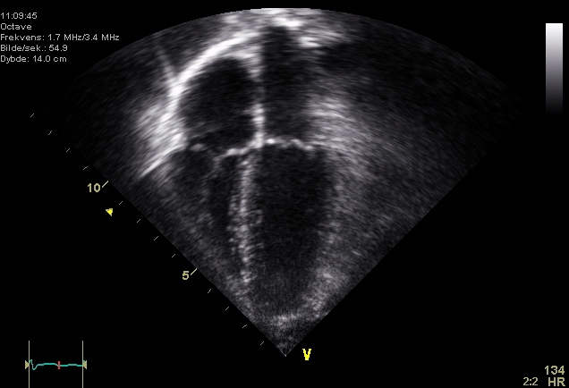

Ficha del catálogo
Ecocardiograma: Vista apical de 4 cámaras
- Sistema
- Cardiovascular
- Modalidad
- US
- Región
- Corazón
- Dificultad
- Intermedio
El ecocardiograma emplea ultrasonido para ver el corazón latiendo en tiempo real. La vista apical de cuatro cámaras muestra simultáneamente ambas aurículas, ambos ventrículos y las válvulas auriculoventriculares, y es una de las proyecciones más informativas del estudio.
Técnica
Transductor sectorial de baja frecuencia colocado en el ápex cardiaco, con el paciente en decúbito lateral izquierdo para acercar el corazón a la pared torácica.
Qué observar
- Las cuatro cavidades: Ventrículos en la parte superior de la pantalla y aurículas en la inferior
- Grosor y contractilidad de las paredes ventriculares, valorando si algún segmento se mueve menos
- Válvulas mitral y tricúspide abriendo y cerrando de forma simétrica
- Tabiques interventricular e interauricular íntegros, sin soluciones de continuidad
- Tamaño relativo de las cavidades: El ventrículo izquierdo es normalmente mayor que el derecho
- Presencia de derrame pericárdico como espacio anecoico rodeando el corazón
Hallazgos
Vista apical de cuatro cámaras con cavidades de tamaño conservado, tabiques íntegros y válvulas auriculoventriculares de aspecto normal.
Perlas
La válvula tricúspide se inserta ligeramente más hacia el ápex que la mitral. Esa pequeña diferencia de altura permite identificar con seguridad cuál cavidad es la derecha y cuál la izquierda, dato clave en el estudio de cardiopatías congénitas.
Diagnóstico diferencial
- Miocardiopatía dilatada
- El ventrículo izquierdo aparece dilatado y esférico con paredes adelgazadas y contractilidad global disminuida, en lugar del ventrículo cónico y bien contráctil del corazón normal.
- Miocardiopatía hipertrófica
- Se observa engrosamiento parietal, con frecuencia asimétrico y de predominio septal, con cavidad pequeña y función sistólica conservada o aumentada.
- Cardiopatía isquémica
- Aparecen alteraciones segmentarias de la contractilidad limitadas a un territorio coronario, mientras el resto de las paredes se mueve con normalidad.
- Derrame pericárdico y taponamiento
- Se identifica un espacio anecoico circunferencial alrededor del corazón, y en el taponamiento hay colapso de cavidades derechas y variación respiratoria exagerada del flujo.
- Comunicación interauricular o interventricular
- Se observa una solución de continuidad en el tabique con paso de flujo demostrable con Doppler color y dilatación de las cavidades que reciben el cortocircuito.
- Sobrecarga del ventrículo derecho
- El ventrículo derecho se dilata hasta igualar o superar al izquierdo y el tabique interventricular se aplana, alterando la geometría normal.
Simuladores
- El acortamiento por una ventana apical mal alineada hace que el ventrículo izquierdo parezca más corto y grueso de lo que es, y falsea las mediciones de volumen y de función.
- La banda moderadora y las trabéculas del ventrículo derecho son estructuras normales que pueden confundirse con trombos o con masas.
- La red de Chiari y la válvula de Eustaquio en la aurícula derecha son remanentes embrionarios normales que simulan membranas o vegetaciones.
- Los artefactos de reverberación y las sombras acústicas de las costillas y del pulmón generan zonas de aparente pérdida de pared que se resuelven cambiando de ventana.
Por modalidad
- US
- El ecocardiograma es el estudio de primera línea: Valora en tiempo real anatomía, función, válvulas y pericardio, sin radiación y a pie de cama.
- RM
- Es la referencia para cuantificar volúmenes y función y para caracterizar el tejido miocárdico, incluida la fibrosis con realce tardío.
- TC
- Aporta excelente detalle anatómico de coronarias, pericardio y estructuras vecinas, y sirve para planificar procedimientos estructurales.
- RX
- La radiografía de tórax ofrece una valoración indirecta del tamaño cardiaco y de la congestión pulmonar, útil como aproximación inicial.
Protocolo
El paciente se coloca en decúbito lateral izquierdo con el brazo izquierdo bajo la cabeza, lo que acerca el corazón a la pared torácica y amplía la ventana acústica. Se emplea un transductor sectorial de baja frecuencia colocado en el ápex cardiaco, con el haz orientado hacia la base del corazón y el marcador según la convención del laboratorio. Se conecta el trazado electrocardiográfico para sincronizar las imágenes con el ciclo cardiaco y se pide al paciente que respire con suavidad o que mantenga una espiración corta durante la captura. La vista apical de cuatro cámaras se complementa con las de dos y tres cámaras, con las paraesternales y con la subcostal, y se añade Doppler color y espectral para valorar las válvulas.
Clasificación
La función sistólica se cuantifica mediante la fracción de eyección, calculada de forma preferente por el método de Simpson biplano a partir de las vistas apicales, y se clasifica en conservada, ligeramente reducida y reducida. La contractilidad regional se describe con un modelo segmentario del ventrículo izquierdo, habitualmente de diecisiete segmentos, asignando a cada uno un grado desde normal hasta acinético o discinético. La función diastólica se gradúa en varios estadios según el patrón de llenado mitral y los parámetros de Doppler tisular. La gravedad de las valvulopatías se clasifica en leve, moderada y grave con criterios cuantitativos definidos.
Errores frecuentes
- Medir sobre una vista acortada, lo que subestima los volúmenes ventriculares y sobreestima la función.
- Confundir estructuras normales como la banda moderadora o la red de Chiari con trombos o vegetaciones.
- Informar la función global sin analizar la contractilidad segmento por segmento, con lo que se pierden alteraciones regionales.
- Interpretar una ventana acústica deficiente como hallazgo patológico en vez de reconocer la limitación técnica y buscar otra ventana.

ecocardiograma corazon 4 camaras valvulas ultrasonido apical normal